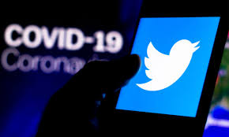
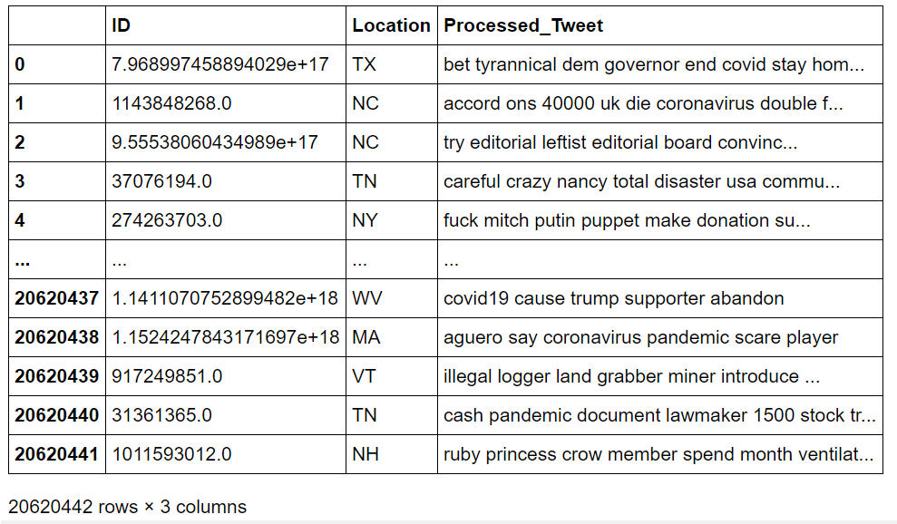
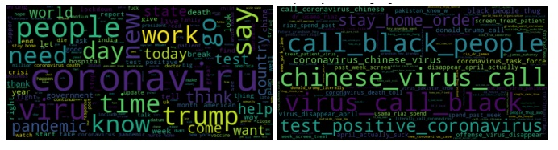
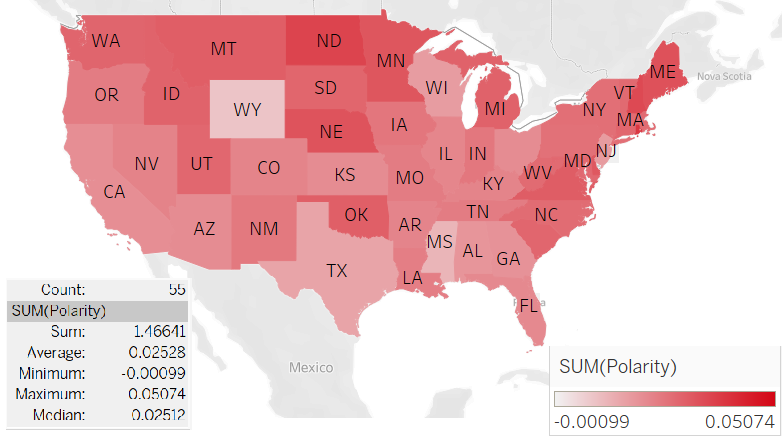
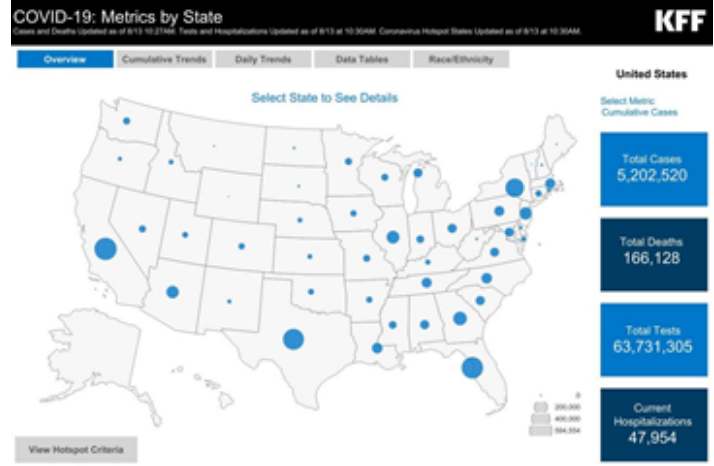
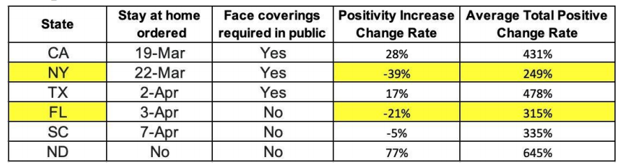
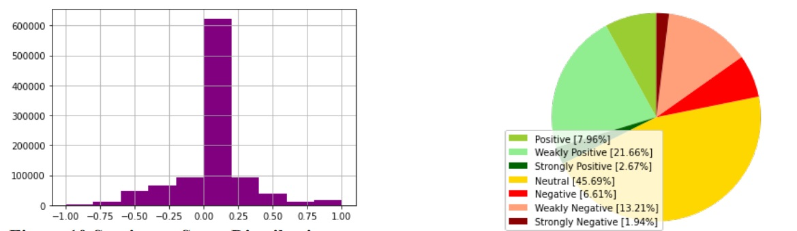
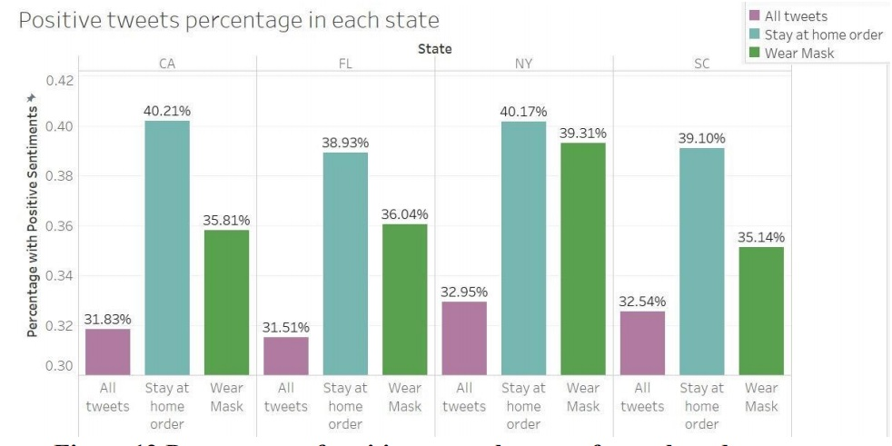
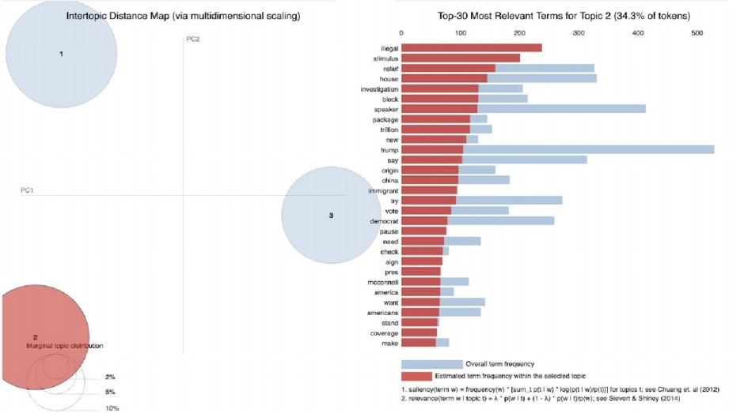
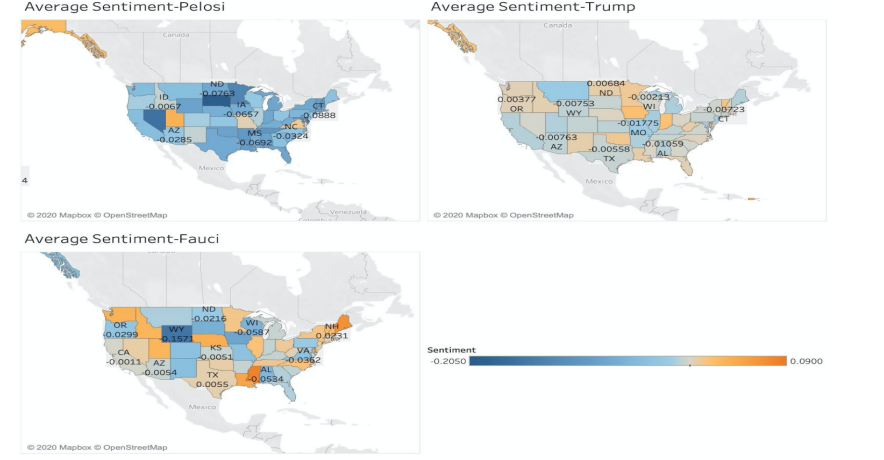

<!DOCTYPE HTML>
<!--
	Editorial by HTML5 UP
	html5up.net | @ajlkn
	Free for personal and commercial use under the CCA 3.0 license (html5up.net/license)
-->
<html>
	<head>
		<title>Covid - Editorial by HTML5 UP</title>
		<meta charset="utf-8" />
		<meta name="viewport" content="width=device-width, initial-scale=1, user-scalable=no" />
		<link rel="stylesheet" href="assets/css/main.css" />
	</head>
	<body class="is-preload">

		<!-- Wrapper -->
			<div id="wrapper">

				<!-- Main -->
					<div id="main">
						<div class="inner">

							<!-- Header -->
								<header id="header">
									<a href="index.html" class="logo"><strong>NLP project</strong> by Yiyang</a>
									<ul class="icons">
										
										<li><a href="https://www.facebook.com/profile.php?id=100010881825806" class="icon brands fa-facebook-f"><span class="label">Facebook</span></a></li>
										<li><a href="https://www.snapchat.com/add/yiyangwang2019" class="icon brands fa-snapchat-ghost"><span class="label">Snapchat</span></a></li>
										<li><a href="https://instagram.com/eyon0715?igshid=zhrjk5ve768g" class="icon brands fa-instagram"><span class="label">Instagram</span></a></li>
										<li><a href="https://www.linkedin.com/in/yiyangwang0715/" class="fab fa-linkedin-in"><span class="label"></a></li>
										
									</ul>
								</header>

							<!-- Content -->
								<section>
									<header class="main">
										<h1>NLP Analysis of Covid-19 Related Tweets</h1>
										<h2>(Using Python, Tableau)</h2>
									</header>

									
									<a href="#" class="image"></a>
									<br>
									<h3>With the recent explosion of the 
										COVID-19 pandemic, it is now more critical than ever to see which government actions are done 
										right or which ones are received well by the public. The abundant tweets about the pandemic are 
										rich sources of information for us to explore trends and to improve public policies. This project is aimed to use NLP to analyze COVID-19 related tweets and propose possible actions for governments.</p>
									<a href="https://github.com/yiyangwang0715" class="button big">Click to check out the codes</a>									<a href=""></a>
									<a href="https://www.scribd.com/document/478471338/SAC-Final-Report-Group3-Formatted-pdf" class="button big">Click to check out the full report</a>									<a href=""></a>

									<hr class="major" />

									<h2>Exploratory Data Analysis</h2>
									
									<br>
									<br>
									<h4>We scraped more than 20 million tweets related to COVID-19 from March to June using Python.</h4>
									
									<p>Then we first generate N-gram wordclouds to get a general overview of public response to Covid-19. With President Trump controversially naming COVID-19 as “the Chinese Virus” in 
										current events, this time we see more discussion about China. Also, we find “black people” as a 
										hot topic in the tweets. </p>
									
									
									
									<br>
									<p>We find a disassociation between the states with the highest positive cases and the states with the 
										highest tweet frequency. Thus, we would like to explore possible relationships between the 
										sentiment of tweets in each state. We run sentiment analysis and generate sentiment score for each states. </p>
									<h4>The state with a darker color means that the 
										tweets in that state hold a positive attitude towards COVID-19. Interestingly, these are all 
										the states in the Northern or Eastern part of the U.S., which probably indicates a correlation 
										between tweet positivity and the political inclination of a state.</h4>


										<hr class="major" />

										<h2>Government Actions</h2>

									
									
									<p></p>
									<h4>We believe that stay-at-home order and public coverings requirements will help slow down the 
										average positive increase and positivity increase.</h4>
									<p> Summarizing the analysis above, we decided to choose New York, 
										California, Florida, Taxes, South Carolina, and North Dakota to further explore the 
										relationship between government policy, tweets, and COVID-19 cases using sentiment analysis 
										and topic modeling.</p>

									<hr class="major" />

									<h2>Sentiment Analysis and Topic Modeling</h2>
									
									<p></p>
									<p>Sentiment analysis refers to the use of natural language processing, text mining, and computational 
										linguistics to identify and extract subjective information in the original material. People showed a generally weakly positive attitude toward 
										COVID-19. About half of the tweets (45.69%) show a 
										neutral attitude, more tweets show a positive attitude (32.29% in total ), and only less than onequarter of tweets show a negative sentiment.</p>
									
									
									<p>We used Tableau for visualization. Among four states, New York has a higher percentage with positive 
										tweets (32.95%) while Florida has the lowest percentage with positive tweets (31.51%). We can 
										see a dramatic increase in the percentage of positive tweets towards the two policies in each state, 
										in general, people have a more active response to the government policies. In New York, up to 
										40.17% of tweets show a positive attitude towards the stay-at-home order. However, when we 
										take a look at the differences between the two policies, we see a generally less active response to 
										wearing masks compared with the stay-at-home order. This is in line with what we observe in 
										daily life and it also reflects the fact that Americans are less accustomed to or willing to wear 
										masks.</p>
									
									
									<p>We focus the analysis on three 
										politicians who are active and leading government figures in COVID-19 related news, namely, 
										Speaker Nancy Pelosi, President Trump, and the director of the National Institute of Allergy and 
										Infectious Diseases (NIAID), Dr. Fauci. The model used for topic modeling is LDA, and we select 
										the “best number of topics” parameter by reviewing the Intertopic Distance Map and the most 
										relevant terms chart so that each topic is discriminant.</p>
									
									
									<p>In the below graph (Figure 19), we see how sentiments toward different government figures vary 
										across different states. The darker the color on the map, the stronger the average sentiments of 
										each state. The lighter the color, the more neutral the average sentiments.</p>
									
									<hr class="major" />

									<h2>Conlusion and Recommendation</h2>
									<p><li>1. After analyzing Positivity Increase Change Rate and Average Total Positive Change Rate, we 
										find that wearing a mask and implementing the stay-at-home order greatly slow down the speed 
										people get infected. 
										<li>2. According to the sentiment analysis above, we find people generally have weakly positive 
										attitudes towards COVID-19. Moreover, people have more active responses to government 
										policies, especially for stay-at-home order compared to wearing masks in public. States that are in 
										the north or east part of the U.S. are more actively following the government policies. Also, 
										combined with the COVID-19 confirmed diagnostic rate, we find that actively following 
										government policies will result in a lower confirmed diagnostic rate. 
										<li>3. In our politician analysis, we discover that Speaker Pelosi’s relief plan is slightly negatively 
										received by most states. Dr. Fauci is linked to multiple topics related to science expertise but 
										receives polar sentiments. Trump generates the most tweets about him, but those tweets do not fall 
										into distinguishable topics of specific policies. This may be because he rarely talks about the details 
										of a policy, and mostly rely on simple words in his language. To our surprise, he has a mostly 
										neutral sentiment from U.S. states. 
										<li>4. Using the LDA model on COVID-19 tweets, we are able to monitor the public’s response to 
										political figures, as well as extract topics and key terms discussed by the public. The model and 
										process we create can help government offices extract public opinions quickly when mass 
										polling is not viable.</p>
								</section>

						</div>
					</div>

	<!-- Sidebar -->
	<div id="sidebar">
		<div class="inner">


		<!-- Menu -->
		<nav id="menu">
			<header class="major">
				<h2>Yiyang Wang</h2>
			</header>
			<ul>
				<li><a href="index.html">Home</a></li>
				<li>
					<span class="opener">Projects</span>
					<ul>
								<li><a href="project1.html">NLP Analysis of Tweets: Propose Strategic Government Response to Covid-19 </a></li>
								<li><a href="project2.html">Customer Revenue Prediction: Google Online Store</a></li>
								<li><a href="project3.html">Cell2Cell Case Analysis</a></li>
								<li><a href="project4.html">Airbnb Superhost Analysis</a></li>
								<li><a href="project5.html">Pricing Strategy for Tropicana</a></li>
								<li><a href="project6.html">Printed Ad Optimization </a></li>

							</ul>
						</li>
						<li><a href="moreaboutme.html">More About Me</a></li>
						<li><a href="resume.html">Resume</a></li>
					</ul>
				</nav>

			


							<!-- Section -->
								<section>
									<header class="major">
										<h2>Get in touch</h2>
									</header>
									<p>Have a question? </p>Feel free to share your thoughts with me</p>								<ul class="contact">
										<li class="icon solid fa-envelope"><a href="#">yiyang.wang@marylandsmith.umd.edu</a></li>
										<li class="icon solid fa-phone">(240) 667-6760</li>

									</ul>
								</section>

							<!-- Footer -->
								<footer id="footer">
									<p class="copyright">&copy; Untitled. All rights reserved. Demo Images: <a href="https://unsplash.com">Unsplash</a>. Design: <a href="https://html5up.net">HTML5 UP</a>.</p>
								</footer>

						</div>
					</div>

			</div>

		<!-- Scripts -->
			<script src="assets/js/jquery.min.js"></script>
			<script src="assets/js/browser.min.js"></script>
			<script src="assets/js/breakpoints.min.js"></script>
			<script src="assets/js/util.js"></script>
			<script src="assets/js/main.js"></script>

	</body>
</html>